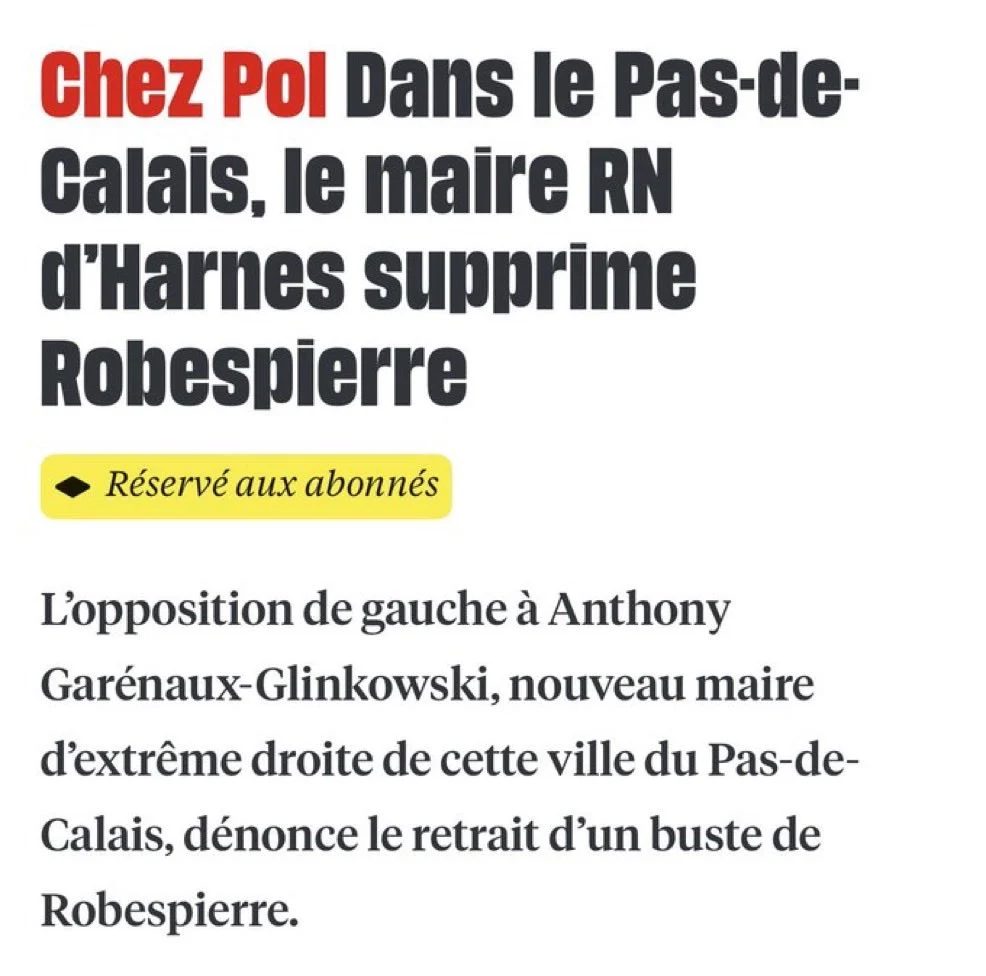

Publication sur X
À Harnes, notre réaction au retrait du buste de Robespierre
Date de publication sur X · 10 avril 2026
Repères éditoriaux
Nous avons dénoncé le retrait du buste par la municipalité. La capture jointe documente le sujet de la publication.
Texte de la publication sur X
Le maire RN d’Harnes retire le buste de Robespierre. L’homme qui a aboli l’esclavage, défendu le suffrage universel, refusé la guerre de conquête. Sans lui, on vivrait encore sous une couronne et un trône de droit divin. https://t.co/RLizd94ydC

Sources
PCF 79 · @79Parti sur X · AR-0005-TW-2042600800673792444
À lire aussi · À Châteaubriant, l’hommage du 22 octobre aux fusillés · Le lien d’origine
Publications associées
- Robespierre et la mémoire républicaine · Réponse dans le même fil